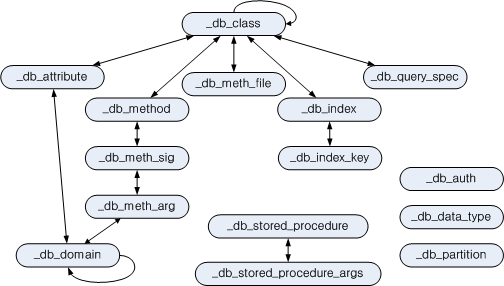

시스템 카탈로그¶
시스템 카탈로그 가상 클래스(virtual class)를 사용하면 다양한 스키마 정보를 SQL 문을 이용하여 쉽게 얻어낼 수 있다. 예를 들어 다음과 같은 스키마 정보들을 카탈로그 가상 클래스를 이용하여 얻을 수 있다.
-- 클래스 'db_user'를 참조하는 클래스들
SELECT class_name
FROM db_attribute
WHERE domain_class_name = 'db_user';
-- 현재 사용자가 접근 가능한 클래스 개수
SELECT COUNT(*)
FROM db_class;
-- 클래스 'db_user'의 속성
SELECT attr_name, data_type
FROM db_attribute
WHERE class_name = 'db_user';
시스템 카탈로그 클래스¶
카탈로그 가상 클래스를 정의하기 위해 우선 카탈로그 클래스를 정의한다. 아래 그림은 추가되는 카탈로그 클래스들과 그 관계를 나타낸다. 화살표는 참조 관계이며, ‘_’로 시작하는 클래스는 카탈로그 클래스이다.

추가한 카탈로그 클래스들은 데이터베이스 안의 모든 클래스, 속성(attribute), 메서드 등에 대한 정보를 표현한다. 카탈로그 클래스들은 클래스 합성 계층(class composition hierarchy)으로 구성되어 있는데, 상호 참조가 가능하도록 카탈로그 클래스 인스턴스들의 OID를 가지도록 구성되어 있다.
_db_class¶
클래스에 대한 정보를 표현하며 class_name에 대한 인덱스가 생성되어 있다.
속성명 |
데이터 타입 |
설명 |
|---|---|---|
class_of |
object |
클래스 객체로서 시스템 내부에 저장된 클래스에 대한 메타 정보 객체를 의미한다. |
class_name |
VARCHAR(255) |
클래스명 |
class_type |
INTEGER |
클래스이면 0, 가상 클래스이면 1 |
is_system_class |
INTEGER |
사용자가 정의한 클래스이면 0, 시스템 클래스이면 1 |
owner |
db_user |
클래스 소유자 |
inst_attr_count |
INTEGER |
인스턴스 속성의 개수 |
class_attr_count |
INTEGER |
클래스 속성의 개수 |
shared_attr_count |
INTEGER |
공유 속성의 개수 |
inst_meth_count |
INTEGER |
인스턴스 메서드의 개수 |
class_meth_count |
INTEGER |
클래스 메서드의 개수 |
collation_id |
INTEGER |
콜레이션 식별자 |
tde_algorithm |
INTEGER |
TDE 암호화 알고리즘 0: NONE, 1: AES, 2: ARIA |
sub_classes |
SEQUENCE OF _db_class |
한 단계 하위 클래스 |
super_classes |
SEQUENCE OF _db_class |
한 단계 상위 클래스 |
inst_attrs |
SEQUENCE OF _db_attribute |
인스턴스 속성 |
class_attrs |
SEQUENCE OF _db_attribute |
클래스 속성 |
shared_attrs |
SEQUENCE OF _db_attribute |
공유 속성 |
inst_meths |
SEQUENCE OF _db_method |
인스턴스 메서드 |
class_meths |
SEQUENCE OF _db_method |
클래스 메서드 |
meth_files |
SEQUENCE OF _db_methfile |
메서드에 대한 함수가 위치한 파일 경로 |
query_specs |
SEQUENCE OF _db_queryspec |
가상 클래스인 경우 그 SQL 정의문 |
indexes |
SEQUENCE OF _db_index |
클래스에 생성된 인덱스 |
comment |
VARCHAR(2048) |
클래스 설명 |
partition |
SEQUENCE of _db_partition |
파티션 정보 |
다음 예제에서는 사용자 PUBLIC 이 소유하고 있는 클래스의 모든 하위 클래스를 검색한다(결과로 보이는 하위 클래스 female_event 는 ADD SUPERCLASS 절 의 예제를 참조한다).
SELECT class_name, SEQUENCE(SELECT class_name FROM _db_class s WHERE s IN c.sub_classes)
FROM _db_class c
WHERE c.owner.name = 'PUBLIC' AND c.sub_classes IS NOT NULL;
class_name sequence((select class_name from _db_class s where s in c.sub_classes))
============================================
'event' {'female_event'}
Note
시스템 카탈로그 클래스에 대한 모든 예제는 csql 프로그램에서 작성되었는데, 여기에서는 –no-auto-commit (auto-commit 모드 비활성화), -u (사용자 dba를 명시) 옵션을 사용하였다.
% csql --no-auto-commit -u dba demodb
_db_attribute¶
속성에 대한 정보를 표현하며 class_of, attr_name 및 attr_type 에 대한 인덱스가 생성되어 있다.
속성명 |
데이터 타입 |
설명 |
|---|---|---|
class_of |
_db_class |
속성이 속한 클래스. |
attr_name |
VARCHAR (255) |
속성명. |
attr_type |
INTEGER |
속성이 정의된 타입. 인스턴스 속성이면 0, 클래스 속성이면 1, 공유 속성이면 2이다. |
from_class_of |
_db_class |
상속받은 속성이면 그 속성이 정의되어 있는 상위 클래스가 설정되며, 상속받지 않은 것이면 NULL 이다 |
from_attr_name |
VARCHAR(255) |
상속받은 속성이며 이름 충돌(name conflict)이 발생하여 이를 해결하기 위해 그 속성명이 바뀐 경우, 상위 클래스에 정의된 원래 이름이 설정된다. 그 이외에는 모두 NULL 이 설정된다. |
def_order |
INTEGER |
속성이 클래스에 정의된 순서로 0부터 시작한다. 상속받은 속성이면 그 상위 클래스에서 정의된 순서를 따른다. 예를 들어, 클래스 y가 클래스 x로부터 속성 a를 상속받고 a는 x에서 첫 번째로 정의되었을 때 def_order는 0이 된다. |
data_type |
INTEGER |
속성의 데이터 타입. 아래의 ‘CUBRID가 지원하는 데이터 타입’ 표에서 명시하는 value 중 하나이다. |
default_value |
VARCHAR (255) |
기본값. 데이터 타입에 관계없이 모두 문자열로 저장된다. 기본값이 없으면 NULL , 기본값이 NULL 이면 ‘NULL’로 표현된다. 데이터 타입이 객체 타입이면 ‘volume id | page id | slot id’, 집합 타입이면 ‘{element 1, element 2, …}’로 표현된다. |
domains |
SEQUENCE OF _db_domain |
데이터 타입에 대한 도메인 정보. |
is_nullable |
INTEGER |
not null 제약이 설정되어 있으면 0, 그렇지 않으면 1이 설정된다. |
comment |
VARCHAR(1024) |
속성에 대한 설명. |
CUBRID가 지원하는 데이터 타입
값 |
의미 |
값 |
의미 |
|---|---|---|---|
1 |
INTEGER |
22 |
NUMERIC |
2 |
FLOAT |
23 |
BIT |
3 |
DOUBLE |
24 |
VARBIT |
4 |
STRING |
25 |
CHAR |
5 |
OBJECT |
31 |
BIGINT |
6 |
SET |
32 |
DATETIME |
7 |
MULTISET |
33 |
BLOB |
8 |
SEQUENCE |
34 |
CLOB |
9 |
ELO |
35 |
ENUM |
10 |
TIME |
36 |
TIMESTAMPTZ |
11 |
TIMESTAMP |
37 |
TIMESTAMPLTZ |
12 |
DATE |
38 |
DATETIMETZ |
18 |
SHORT |
39 |
DATETIMELTZ |
CUBRID가 지원하는 문자셋
값 |
의미 |
|---|---|
0 |
US English - ASCII encoding |
2 |
Binary |
3 |
Latin 1 - ISO 8859 encoding |
4 |
KSC 5601 1990 - EUC encoding |
5 |
UTF8 - UTF8 encoding |
다음 예제에서는 사용자 PUBLIC 이 소유하고 있는 클래스 중에서 사용자 클래스(from_class_of.is_system_class = 0)인 것을 검색한다.
SELECT class_of.class_name, attr_name
FROM _db_attribute
WHERE class_of.owner.name = 'PUBLIC' AND from_class_of.is_system_class = 0
ORDER BY 1, def_order;
class_of.class_name attr_name
============================================
'female_event' 'code'
'female_event' 'sports'
'female_event' 'name'
'female_event' 'gender'
'female_event' 'players'
_db_domain¶
도메인에 대한 정보이며 object_of에 대한 인덱스가 생성되어 있다.
속성명 |
데이터 타입 |
설명 |
|---|---|---|
object_of |
object |
도메인을 참조하는 속성, 메서드 인자 또는 도메인 |
data_type |
INTEGER |
도메인의 데이터 타입( _db_attribute 의 ‘CUBRID가 지원하는 데이터 타입’ 표의 ‘값’ 중 하나) |
prec |
INTEGER |
데이터 타입에 대한 전체 자릿수(precision). 전체 자릿수가 명시되지 않은 경우 0이 설정됨 |
scale |
INTEGER |
데이터 타입에 대한 소수점 이하의 자릿수(scale). 소수점 이하의 자릿수가 명시되지 않은 경우 0이 설정됨 |
class_of |
_db_class |
데이터 타입이 객체 타입인 경우 그 도메인 클래스. 객체 타입이 아닌 경우 NULL 이 설정됨. |
code_set |
INTEGER |
문자열 타입인 경우, 문자셋( _db_attribute 의 ‘CUBRID가 지원하는 문자셋’ 표의 ‘값’ 중 하나). 문자 스트링 타입이 아닌 경우 0. |
collation_id |
INTEGER |
콜레이션 ID |
enumeration |
SEQUENCE OF STRING |
열거형 타입 정의 문자열 |
set_domains |
SEQUENCE OF _db_domain |
컬렉션 타입인 경우, 그 집합을 구성하는 원소의 데이터 타입에 대한 도메인 정보. 컬렉션 타입이 아닌 경우 NULL 이 설정됨 |
_db_charset¶
문자셋에 대한 정보이다.
속성명 |
데이터 타입 |
설명 |
|---|---|---|
charset_id |
INTEGER |
문자셋 식별자 |
charset_name |
CHARACTER VARYING(32) |
문자셋 이름 |
default_collation |
INTEGER |
기본 콜레이션 식별자 |
char_size |
INTEGER |
한 문자의 바이트 크기 |
_db_collation¶
콜레이션(collation)에 대한 정보.
속성명 |
데이터 타입 |
설명 |
|---|---|---|
coll_id |
INTEGER |
콜레이션 식별자 |
coll_name |
VARCHAR(32) |
콜레이션 이름 |
charset_id |
INTEGER |
문자셋 식별자 |
built_in |
INTEGER |
제품 설치 시 콜레이션 포함 여부 |
expansions |
INTEGER |
확장 지원 여부 (0: 지원 안 함, 1: 지원) |
contractions |
INTEGER |
축약 지원 여부 (0: 지원 안 함, 1: 지원) |
uca_strength |
INTEGER |
가중치 세기(weight strength) |
checksum |
VARCHAR(32) |
콜레이션 파일의 체크섬 |
_db_method¶
메서드에 대한 정보이며 class_of, meth_name에 대한 인덱스가 생성되어 있다.
속성명 |
데이터 타입 |
설명 |
|---|---|---|
class_of |
_db_class |
메서드가 속한 클래스 |
meth_type |
INTEGER |
메서드가 클래스에 정의된 타입. 인스턴스 메서드이면 0, 클래스 메서드이면 1 |
from_class_of |
_db_class |
메서드가 상속된 것이면 그 메서드가 정의되어 있는 상위 클래스가 설정되며 그렇지 않으면 NULL |
from_meth_name |
VARCHAR(255) |
상속받은 메서드이며 이름 충돌이 발생하여 이를 해결하기 위해 그 메서드명이 바뀐 경우, 상위 클래스에 정의된 원래 이름이 설정됨. 그 이외에는 모두 NULL |
meth_name |
VARCHAR(255) |
메서드 이름 |
signatures |
SEQUENCE OF _db_meth_sig |
메서드 호출시 수행하는 C 함수에 대한 구성 정보 |
다음 예제에서는 사용자 DBA 가 소유하고 있는 클래스 중에서 클래스 메서드가 있는 것(c.class_meth_count > 0)의 클래스 메서드를 검색한다.
SELECT class_name, SEQUENCE(SELECT meth_name
FROM _db_method m
WHERE m in c.class_meths)
FROM _db_class c
WHERE c.owner.name = 'DBA' AND c.class_meth_count > 0
ORDER BY 1;
class_name sequence((select meth_name from _db_method m where m in c.class_meths))
============================================
'db_serial' {'change_serial_owner'}
'db_authorizations' {'add_user', 'drop_user', 'find_user', 'print_authorizations', 'info', 'change_owner', 'change_trigg
r_owner', 'get_owner'}
'db_authorization' {'check_authorization'}
'db_user' {'add_user', 'drop_user', 'find_user', 'login'}
'db_root' {'add_user', 'drop_user', 'find_user', 'print_authorizations', 'info', 'change_owner', 'change_trigg
r_owner', 'get_owner', 'change_sp_owner'}
_db_meth_sig¶
메서드에 대한 C 함수의 구성 정보이며 meth_of에 대한 인덱스가 생성되어 있다.
속성명 |
데이터 타입 |
설명 |
|---|---|---|
meth_of |
_db_method |
함수 정보에 대한 메서드 |
arg_count |
INTEGER |
함수의 입력인자 개수 |
func_name |
VARCHAR(255) |
함수명 |
return_value |
SEQUENCE OF _db_meth_arg |
함수의 리턴 값 |
arguments |
SEQUENCE OF _db_meth_arg |
함수의 입력인자 |
_db_meth_arg¶
메서드 인자에 대한 정보이며 meth_sig_of에 대한 인덱스가 생성되어 있다.
속성명 |
데이터 타입 |
설명 |
|---|---|---|
meth_sig_of |
_db_meth_sig |
인자가 속한 함수 정보 |
data_type |
INTEGER |
인자의 데이터 타입( _db_attribute 의 “CUBRID가 지원하는 데이터 타입” 표의 “값” 중 하나) |
index_of |
INTEGER |
함수정의에 인자가 나열된 순서. 리턴 값이면 0, 입력인자이면 1부터 시작함. |
domains |
SEQUENCE OF _db_domain |
인자의 도메인 |
_db_meth_file¶
메서드에 대한 함수가 정의된 파일 정보이며 class_of에 대한 인덱스가 생성되어 있다.
속성명 |
데이터 타입 |
설명 |
|---|---|---|
class_of |
_db_class |
메서드 파일 정보가 속한 클래스 |
from_class_of |
_db_class |
파일 정보가 상속된 것이면 그 파일 정보가 정의되어 있는 상위 클래스가 설정되며, 그렇지 않으면 NULL |
path_name |
VARCHAR(255) |
메서드가 위치한 파일의 경로 |
_db_query_spec¶
가상 클래스의 SQL 정의문이며 class_of에 대한 인덱스가 생성되어 있다. ‘spec’속성의 데이터 타입은 10.1 Patch 3 이전버전의 경우 VARCHAR(4096) 이다.
속성명 |
데이터 타입 |
설명 |
버전별특성(10.1버전만) |
|---|---|---|---|
class_of |
_db_class |
가상 클래스에 대한 클래스 정보 |
|
spec |
VARCHAR(1073741823) |
가상 클래스에 대한 SQL 정의문 |
10.1 Patch 4 이후 |
VARCHAR(4096) |
10.1 Patch 3 이전 |
_db_index¶
인덱스에 대한 정보이며 class_of에 대한 인덱스가 생성되어 있다.
속성명 |
데이터 타입 |
설명 |
|---|---|---|
class_of |
_db_class |
인덱스가 속한 클래스 |
index_name |
VARCHAR(255) |
인덱스명 |
is_unique |
INTEGER |
고유 인덱스(unique index)이면 1, 그렇지 않으면 0 |
key_count |
INTEGER |
키를 구성하는 속성의 개수 |
key_attrs |
SEQUENCE OF _db_index_key |
키를 구성하는 속성들 |
is_reverse |
INTEGER |
역 인덱스(reverse index)이면 1, 그렇지 않으면 0 |
is_primary_key |
INTEGER |
기본 키이면 1, 그렇지 않으면 0 |
is_foreign_key |
INTEGER |
외래 키이면 1, 그렇지 않으면 0 |
filter_expression |
VARCHAR(255) |
필터링된 인덱스의 조건 |
have_function |
INTEGER |
함수 기반 인덱스이면 1, 그렇지 않으면 0 |
comment |
VARCHAR (1024) |
인덱스 설명 |
다음 예제에서는 클래스에 속하는 인덱스명을 검색한다.
SELECT class_of.class_name, index_name
FROM _db_index
ORDER BY 1;
class_of.class_name index_name
============================================
'_db_attribute' 'i__db_attribute_class_of_attr_name'
'_db_auth' 'i__db_auth_grantee'
'_db_class' 'i__db_class_class_name'
'_db_domain' 'i__db_domain_object_of'
'_db_index' 'i__db_index_class_of'
'_db_index_key' 'i__db_index_key_index_of'
'_db_meth_arg' 'i__db_meth_arg_meth_sig_of'
'_db_meth_file' 'i__db_meth_file_class_of'
'_db_meth_sig' 'i__db_meth_sig_meth_of'
'_db_method' 'i__db_method_class_of_meth_name'
'_db_partition' 'i__db_partition_class_of_pname'
'_db_query_spec' 'i__db_query_spec_class_of'
'_db_stored_procedure' 'u__db_stored_procedure_sp_name'
'_db_stored_procedure_args' 'i__db_stored_procedure_args_sp_name'
'athlete' 'pk_athlete_code'
'db_serial' 'pk_db_serial_name'
'db_user' 'i_db_user_name'
'event' 'pk_event_code'
'game' 'pk_game_host_year_event_code_athlete_code'
'game' 'fk_game_event_code'
'game' 'fk_game_athlete_code'
'history' 'pk_history_event_code_athlete'
'nation' 'pk_nation_code'
'olympic' 'pk_olympic_host_year'
'participant' 'pk_participant_host_year_nation_code'
'participant' 'fk_participant_host_year'
'participant' 'fk_participant_nation_code'
'record' 'pk_record_host_year_event_code_athlete_code_medal'
'stadium' 'pk_stadium_code'
_db_index_key¶
인덱스에 대한 키 정보이며 index_of에 대한 인덱스가 생성되어 있다.
속성명 |
데이터 타입 |
설명 |
|---|---|---|
index_of |
_db_index |
키 속성이 속하는 인덱스 |
key_attr_name |
VARCHAR(255) |
키를 구성하는 속성명 |
key_order |
INTEGER |
키에서 속성이 위치한 순서로 0부터 시작함 |
asc_desc |
INTEGER |
속성 값의 순서가 내림차순이면 1, 그렇지 않으면 0 |
key_prefix_length |
INTEGER |
키로 사용할 prefix의 길이 |
func |
VARCHAR(255) |
함수 기반 인덱스의 함수 표현식 |
status |
INTEGER |
인덱스 상태 |
다음 예제에서는 클래스에 속하는 인덱스명을 검색한다.
SELECT class_of.class_name, SEQUENCE(SELECT key_attr_name
FROM _db_index_key k
WHERE k in i.key_attrs)
FROM _db_index i
WHERE key_count >= 2;
class_of.class_name sequence((select key_attr_name from _db_index_key k where k in
i.key_attrs))
============================================
'_db_partition' {'class_of', 'pname'}
'_db_method' {'class_of', 'meth_name'}
'_db_attribute' {'class_of', 'attr_name'}
'participant' {'host_year', 'nation_code'}
'game' {'host_year', 'event_code', 'athlete_code'}
'record' {'host_year', 'event_code', 'athlete_code', 'medal'}
'history' {'event_code', 'athlete'}
_db_auth¶
클래스에 대한 사용자 권한 정보를 나타내며, grantee에 인덱스가 생성되어 있다.
속성명 |
데이터 타입 |
설명 |
|---|---|---|
grantor |
db_user |
권한 부여자 |
grantee |
db_user |
권한 피부여자 |
class_of |
_db_class |
권한부여 대상인 클래스 객체 |
auth_type |
VARCHAR(7) |
부여된 권한 타입 이름 |
is_grantable |
INTEGER |
권한 받은 클래스에 대해 다른 사용자에게 권한을 부여할 수 있으면 1, 아니면 0 |
CUBRID가 지원하는 권한 타입은 다음과 같다.
SELECT
INSERT
UPDATE
DELETE
ALTER
INDEX
EXECUTE
다음 예제에서는 클래스 db_trig 에 정의되어 있는 권한 정보를 검색한다.
SELECT grantor.name, grantee.name, auth_type
FROM _db_auth
WHERE class_of.class_name = 'db_trig';
grantor.name grantee.name auth_type
==================================================================
'DBA' 'PUBLIC' 'SELECT'
_db_data_type¶
CUBRID가 지원하는 데이터 타입(_db_attribute 의 ‘CUBRID가 지원하는 데이터 타입’ 표 참조)을 나타낸다.
속성명 |
데이터 타입 |
설명 |
|---|---|---|
type_id |
INTEGER |
데이터 타입 식별자. ‘CUBRID가 지원하는 데이터 타입’ 표의 ‘값’에 해당함 |
type_name |
VARCHAR(9) |
데이터 타입 이름. ‘CUBRID가 지원하는 데이터 타입’ 표의 ‘의미’에 해당함 |
다음 예제에서는 클래스 event 의 속성과 각 타입명을 검색한다.
SELECT a.attr_name, t.type_name
FROM _db_attribute a join _db_data_type t ON a.data_type = t.type_id
WHERE class_of.class_name = 'event'
ORDER BY a.def_order;
attr_name type_name
============================================
'code' 'INTEGER'
'sports' 'STRING'
'name' 'STRING'
'gender' 'CHAR'
'players' 'INTEGER'
_db_partition¶
분할에 대한 정보이며 class_of, pname에 대한 인덱스가 생성되어 있다.
속성명 |
데이터 타입 |
설명 |
|---|---|---|
class_of |
_db_class |
Parent class의 OID |
pname |
VARCHAR(255) |
Parent - NULL |
ptype |
INTEGER |
0 - HASH 1 - RANGE 2 - LIST |
pexpr |
VARCHAR(255) |
Parent 에만 해당 |
pvalues |
SEQUENCE OF |
Parent - 칼럼명, Hash size RANGE - MIN/MAX value - 무한의 MIN/MAX는 NULL 로 저장 LIST - value list |
comment |
VARCHAR(1024 |
분할 설명 |
_db_stored_procedure¶
Java 저장 함수에 대한 정보이며 sp_name에 대한 인덱스가 생성되어 있다.
속성명 |
데이터 타입 |
설명 |
|---|---|---|
sp_name |
VARCHAR(255) |
SP 이름 |
sp_type |
INTEGER |
SP 종류 (function or procedure) |
return_type |
INTEGER |
리턴 값 타입 |
arg_count |
INTEGER |
매개변수 개수 |
args |
SEQUENCE OF _db_stored_procedure_args |
매개변수 리스트 |
lang |
INTEGER |
구현 언어(현재로서는 Java) |
target |
VARCHAR(4096) |
실행될 Java 메서드 이름 |
owner |
db_user |
소유자 |
comment |
VARCHAR (1024) |
SP 설명 |
_db_stored_procedure_args¶
Java 저장 함수 인자에 대한 정보이며 sp_name에 대한 인덱스가 생성되어 있다.
속성명 |
데이터 타입 |
설명 |
|---|---|---|
sp_name |
VARCHAR(255) |
SP 이름 |
index_of |
INTEGER |
매개변수 순서 |
arg_name |
VARCHAR(255) |
매개변수 이름 |
data_type |
INTEGER |
매개변수 데이터 타입 |
mode |
INTEGER |
모드 (IN, OUT, INOUT) |
comment |
VARCHAR (1024) |
매개변수 설명 |
db_user¶
속성명 |
데이터 타입 |
설명 |
|---|---|---|
name |
VARCHAR(1073741823) |
사용자명 |
id |
INTEGER |
사용자 식별자 |
password |
db_password |
사용자 패스워드로 사용자에게 보여지지는 않는다. |
direct_groups |
SET OF db_user |
사용자가 직접적으로 속한 그룹 |
groups |
SET OF db_user |
사용자가 직,간접적으로 속한 그룹 |
authorization |
db_authorization |
사용자가 가지고 있는 권한 정보 |
triggers |
SEQUENCE OF object |
사용자의 action에 의해 발생하는 트리거들 |
comment |
VARCHAR (1024) |
사용자 설명 |
메서드 이름
set_password ()
set_password_encoded ()
set_password_encoded_sha1 ()
add_member ()
drop_member ()
print_authorizations ()
add_user ()
drop_user ()
find_user ()
login ()
db_authorization¶
속성명 |
데이터 타입 |
설명 |
|---|---|---|
owner |
db_user |
사용자 정보 |
grants |
SEQUENCE OF object |
{사용자가 권한 받은 객체, 객체의 권한 부여자, 권한 종류}의 sequence |
메서드 이름
check_authorization (varchar(255), integer)
db_trigger¶
속성명 |
데이터 타입 |
설명 |
|---|---|---|
owner |
db_user |
트리거 소유자 |
name |
VARCHAR(1073741823) |
트리거명 |
status |
INTEGER |
INACTIVE이면 1, ACTIVE이면 2. 기본값은 2 |
priority |
DOUBLE |
트리거 간의 수행 순서에 대한 우선순위. 기본값은 0 |
event |
INTEGER |
UPDATE는 0, UPDATE STATEMENT는 1, DELETE는 2, DELETE STATEMENT는 3, INSERT는 4, INSERT STATEMENT는 5, COMMIT는 8, ROLLBACK은 9 로 설정 |
target_class |
object |
트리거 대상(target)인 클래스에 대한 클래스 객체 |
target_attribute |
VARCHAR(1073741823) |
트리거 대상 속성명. 대상 속성이 명시되지 않으면 NULL 을 설정 |
target_class_attribute |
INTEGER |
대상 속성에 대해, 인스턴스 속성이면 0, 클래스 속성이면 1. 기본값은 0 |
condition_type |
INTEGER |
조건이 있으면 1, 조건이 없으면 NULL |
condition |
VARCHAR(1073741823) |
IF문에 명시된 action 발생 조건 |
condition_time |
INTEGER |
조건이 있으면 BEFORE는 1, AFTER는 2, DEFERRED는 3으로 설정. 조건이 없으면 NULL |
action_type |
INTEGER |
INSERT, UPDATE, DELETE, CALL 중 하나이면 1, REJECT이면 2, INVALIDATE_TRANSACTION이면 3, PRINT이면 4 |
action_definition |
VARCHAR(1073741823) |
triggering되는 수행문 |
action_time |
INTEGER |
BEFORE는 1, AFTER는 2, DEFERRED는 3으로 설정 |
comment |
VARCHAR (1024) |
트리거 설명 |
db_ha_apply_info¶
applylogdb 유틸리티가 복제 로그를 반영할 때마다 그 진행 상태를 저장하기 위한 테이블이다. 이 테이블은 applylogdb 유틸리티가 커밋하는 시점마다 갱신되며, _counter 칼럼에는 수행 연산의 누적 카운트 값이 저장된다. 각 칼럼의 의미는 다음과 같다.
칼럼명 |
칼럼 타입 |
의미 |
|---|---|---|
db_name |
VARCHAR(255) |
로그에 저장된 DB 이름 |
db_creation_time |
DATETIME |
반영하는 로그에 대한 원본 DB의 생성 시각 |
copied_log_path |
VARCHAR(4096) |
반영하는 로그 파일의 경로 |
committed_lsa_pageid |
BIGINT |
마지막에 반영한 commit log lsa의 page id, applylogdb가 재시작해도 last_committed_lsa 보다 앞선 로그는 재반영하지 않음 |
committed_lsa_offset |
INTEGER |
마지막에 반영한 commit log lsa의 offset, applylogdb가 재시작해도 last_committed_lsa 보다 앞선 로그는 재반영하지 않음 |
committed_rep_pageid |
BIGINT |
마지막 반영한 복제 로그 lsa의 pageid, 복제 반영 지연 여부 확인 |
committed_rep_offset |
INTEGER |
마지막 반영한 복제 로그 lsa의 offset, 복제 반영 지연 여부 확인 |
append_lsa_page_id |
BIGINT |
마지막 반영 당시 복제 로그 마지막 lsa의 page id, 복제 반영 당시, applylogdb에서 처리 중인 복제 로그 헤더의 append_lsa를 저장 복제 로그 반영 당시의 지연 여부를 확인 |
append_lsa_offset |
INTEGER |
마지막 반영 당시 복제 로그 마지막 lsa의 offset, 복제 반영 당시, applylogdb에서 처리 중인 복제 로그 헤더의 append_lsa를 저장 복제 로그 반영 당시의 지연 여부를 확인 |
eof_lsa_page_id |
BIGINT |
마지막 반영 당시 복제 로그 EOF lsa의 page id, 복제 반영 당시, applylogdb에서 처리 중인 복제 로그 헤더의 eof_lsa를 저장 복제 로그 반영 당시의 지연 여부를 확인 |
eof_lsa_offset |
INTEGER |
마지막 반영 당시 복제 로그 EOF lsa의 offset, 복제 반영 당시, applylogdb에서 처리 중인 복제 로그 헤더의 eof_lsa를 저장 복제 로그 반영 당시의 지연 여부를 확인 |
final_lsa_pageid |
BIGINT |
applylogdb에서 마지막으로 처리한 로그 lsa의 pageid, 복제 반영 지연 여부 확인 |
final_lsa_offset |
INTEGER |
applylogdb에서 마지막으로 처리한 로그 lsa의 offset, 복제 반영 지연 여부 확인 |
required_page_id |
BIGINT |
log_max_archives 파라미터에 의해 삭제되지 않아야 할 가장 작은 log page id, 복제 반영 시작할 로그 페이지 번호 |
required_page_offset |
INTEGER |
복제 반영 시작할 로그 페이지 offset |
log_record_time |
DATETIME |
슬레이브 DB에 커밋된 복제 로그에 포함된 timestamp, 즉 해당 로그 레코드 생성 시간 |
log_commit_time |
DATETIME |
마지막 commit log의 반영 시간 |
last_access_time |
DATETIME |
db_ha_apply_info 카탈로그의 최종 갱신 시간 |
status |
INTEGER |
반영 진행 상태(0: IDLE, 1: BUSY) |
insert_counter |
BIGINT |
applylogdb가 insert한 횟수 |
update_counter |
BIGINT |
applylogdb가 update한 횟수 |
delete_counter |
BIGINT |
applylogdb가 delete한 횟수 |
schema_counter |
BIGINT |
applylogdb가 schema를 변경한 횟수 |
commit_counter |
BIGINT |
applylogdb가 commit한 횟수 |
fail_counter |
BIGINT |
applylogdb가 insert/update/delete/commit/schema 변경 중 실패 횟수 |
start_time |
DATETIME |
applylogdb 프로세스가 슬레이브 DB에 접속한 시간 |
dual¶
dual 테이블은 오직 하나의 열과 행을 가지며 더미 테이블로 사용된다. dual 테이블은 상수, 계산식 또는 SYS_DATE나 USER와 같은 의사 칼럼을 조회할 때 사용된다. 큐브리드에서 의사 칼럼은 함수로써 제공되며 이에 대한 자세한 내용과 예제들은 연산자와 함수 를 참고한다. 상수, 계산식 또는 의사 칼럼을 조회할 때는 FROM절을 생략하여도 dual 테이블이 자동적으로 참조된다. dual 테이블은 다른 시스템 카탈로그처럼 dba 소유로 생성되지만 dba는 dual 테이블에 대해 SELECT 연산만 수행가능하다. 하지만 다른 시스템 카탈로그와 다르게 PUBLIC 사용자들 또한 dual 테이블에 대해 SELECT 연산을 수행할 수 있다.
속성명 |
데이터 타입 |
설명 |
|---|---|---|
dummy |
VARCHAR(1) |
더미 목적으로만 사용되는 값 |
다음은 CSQL에서 “;plan detail” 명령 입력 또는 “SET OPTIMIZATION LEVEL 513;”을 입력 후 의사 칼럼을 조회하는 질의를 수행한 결과이다(질의 실행 계획 보기). FROM절을 생략하여도 자동적으로 dual 테이블이 참조되는 것을 볼 수 있다.
SET OPTIMIZATION LEVEL 513;
SELECT SYS_DATE;
Join graph segments (f indicates final):
seg[0]: [0]
Join graph nodes:
node[0]: dual dual(1/1) (loc -1)
Query plan:
sscan
class: dual node[0]
cost: 1 card 1
Query stmt:
select SYS_DATE from dual dual
=== <Result of SELECT Command in Line 1> ===
SYS_DATE
============
11/26/2020
시스템 카탈로그 가상 클래스¶
일반 사용자는 자신이 권한을 가진 클래스에 대해서만 그 클래스와 관련된 정보들을 시스템 카탈로그 가상 클래스들을 통해 볼 수 있다. 이 절에서는 각 시스템 카탈로그 가상 클래스들이 어떤 정보를 표현하는지와 가상 클래스 정의문에 대해 설명한다.
DB_CLASS¶
데이터베이스 내에서 현재 사용자가 접근 권한을 가진 클래스에 대한 정보를 보여준다.
속성명 |
데이터 타입 |
설명 |
|---|---|---|
class_name |
VARCHAR (255) |
클래스명 |
owner_name |
VARCHAR (255) |
클래스 소유자명 |
class_type |
VARCHAR (6) |
클래스이면 ‘CLASS’, 가상 클래스이면 ‘VCLASS’ |
is_system_class |
VARCHAR (3) |
시스템 클래스이면 ‘YES’, 아니면 ‘NO’ |
tde_algorithm |
VARCHAR (32) |
TDE 암호화 알고리즘 |
partitioned |
VARCHAR (3) |
분할 그룹 클래스이면 ‘YES’, 아니면 ‘NO’ |
is_reuse_oid_class |
VARCHAR (3) |
REUSE_OID 클래스이면 ‘YES’, 아니면 ‘NO’ |
collation |
VARCHAR(32) |
콜레이션 이름 |
comment |
VARCHAR(2048) |
클래스 설명 |
다음 예제에서는 현재 사용자가 소유하고 있는 클래스를 검색한다.
SELECT class_name
FROM db_class
WHERE owner_name = CURRENT_USER;
class_name
======================
'stadium'
'code'
'nation'
'event'
'athlete'
'participant'
'olympic'
'game'
'record'
'history'
'female_event'
다음 예제에서는 현재 사용자가 접근할 수 있는 가상 클래스를 검색한다.
SELECT class_name
FROM db_class
WHERE class_type = 'VCLASS';
class_name
======================
'db_stored_procedure_args'
'db_stored_procedure'
'db_partition'
'db_trig'
'db_auth'
'db_index_key'
'db_index'
'db_meth_file'
'db_meth_arg_setdomain_elm'
'db_meth_arg'
'db_method'
'db_attr_setdomain_elm'
'db_attribute'
'db_vclass'
'db_direct_super_class'
'db_class'
다음 예제에서는 현재 사용자가 접근할 수 있는 시스템 클래스를 검색한다. (사용자는 PUBLIC )
SELECT class_name
FROM db_class
WHERE is_system_class = 'YES' AND class_type = 'CLASS'
ORDER BY 1;
class_name
======================
'db_authorization'
'db_authorizations'
'db_ha_apply_info'
'db_root'
'db_serial'
'db_user'
'dual'
DB_DIRECT_SUPER_CLASS¶
데이터베이스 내에서 현재 사용자가 접근 권한을 가진 클래스에 대해 상위 클래스가 존재하면 그 클래스명을 보여준다.
속성명 |
데이터 타입 |
설명 |
|---|---|---|
class_name |
VARCHAR (255) |
클래스명 |
super_class_name |
VARCHAR (255) |
한 단계 상위 클래스명 |
다음 예제에서는 클래스 female_event 의 상위 클래스를 검색한다. (ADD SUPERCLASS 절 참조)
SELECT super_class_name
FROM db_direct_super_class
WHERE class_name = 'female_event';
super_class_name
======================
'event'
다음 예제에서는 현재 사용자가 소유하고 있는 클래스의 상위 클래스를 검색한다. (사용자는 PUBLIC )
SELECT c.class_name, s.super_class_name
FROM db_class c, db_direct_super_class s
WHERE c.class_name = s.class_name AND c.owner_name = user
ORDER BY 1;
class_name super_class_name
============================================
'female_event' 'event'
DB_VCLASS¶
데이터베이스 내에서 현재 사용자가 접근 권한을 가진 가상 클래스들에 대해 그 SQL 정의문을 보여준다.
‘vclass_def’ 속성의 데이터 타입은 10.1 Patch 3 이전버전의 경우 VARCHAR(4096) 이다.
속성명 |
데이터 타입 |
설명 |
버전별특성(10.1버전만) |
|---|---|---|---|
vclass_name |
VARCHAR (255) |
가상 클래스명 |
|
vclass_def |
VARCHAR (1073741823) |
가상 클래스의 SQL 정의문 |
10.1 Patch 4 이후 |
VARCHAR (4096) |
10.1 Patch 3 이전 |
||
comment |
VARCHAR (2048) |
가상 클래스 설명 |
다음 예제에서는 가상 클래스 db_class 의 SQL 정의문을 검색한다.
SELECT vclass_def
FROM db_vclass
WHERE vclass_name = 'db_class';
vclass_def
======================
'SELECT [c].[class_name], CAST([c].[owner].[name] AS VARCHAR(255)), CASE [c].[class_type] WHEN 0 THEN 'CLASS' WHEN 1 THEN 'VCLASS' ELSE 'UNKNOW' END, CASE WHEN MOD([c].[is_system_class], 2) = 1 THEN 'YES' ELSE 'NO' END, CASE WHEN [c].[sub_classes] IS NULL THEN 'NO' ELSE NVL((SELECT 'YES' FROM [_db_partition] [p] WHERE [p].[class_of] = [c] and [p].[pname] IS NULL), 'NO') END, CASE WHEN MOD([c].[is_system_class] / 8, 2) = 1 THEN 'YES' ELSE 'NO' END FROM [_db_class] [c] WHERE CURRENT_USER = 'DBA' OR {[c].[owner].[name]} SUBSETEQ ( SELECT SET{CURRENT_USER} + COALESCE(SUM(SET{[t].[g].[name]}), SET{}) FROM [db_user] [u], TABLE([groups]) AS [t]([g]) WHERE [u].[name] = CURRENT_USER) OR {[c]} SUBSETEQ ( SELECT SUM(SET{[au].[class_of]}) FROM [_db_auth] [au] WHERE {[au].[grantee].[name]} SUBSETEQ ( SELECT SET{CURRENT_USER} + COALESCE(SUM(SET{[t].[g].[name]}), SET{}) FROM [db_user] [u], TABLE([groups]) AS [t]([g]) WHERE [u].[name] = CURRENT_USER) AND [au].[auth_type] = 'SELECT')'
DB_ATTRIBUTE¶
데이터베이스 내에서 현재 사용자가 접근 권한을 가진 클래스에 대해 그 속성 정보를 보여준다.
속성명 |
데이터 타입 |
설명 |
|---|---|---|
attr_name |
VARCHAR (255) |
속성명 |
class_name |
VARCHAR (255) |
속성이 속한 클래스명 |
attr_type |
VARCHAR (8) |
인스턴스 속성이면 ‘INSTANCE’, 클래스 속성이면 ‘CLASS’, 공유 속성이면 ‘SHARED’ |
def_order |
INTEGER |
클래스에서 속성이 정의된 순서로 0부터 시작함. 상속받은 속성이면 그 상위 클래스에서 정의된 순서임. |
from_class_name |
VARCHAR (255) |
상속받은 속성이면 그 속성이 정의되어 있는 상위 클래스명이 설정되며, 그렇지 않으면 NULL |
from_attr_name |
VARCHAR (255) |
상속받은 속성이며, 이름 충돌이 발생하여 이를 해결하기 위해 그 속성명이 바뀐 경우, 상위 클래스에 정의된 원래 이름임. 그 이외에는 모두 NULL |
data_type |
VARCHAR (9) |
속성의 데이터 타입( _db_attribute 의 ‘CUBRID가 지원하는 데이터 타입’ 표의 ‘의미’ 중 하나) |
prec |
INTEGER |
데이터 타입의 전체 자릿수. 전체 자릿수가 명시되지 않은 경우 0임 |
scale |
INTEGER |
데이터 타입의 소수점 이하의 자릿수. 소수점 이하의 자릿수가 명시되지 않은 경우 0임 |
charset |
VARCHAR (32) |
문자셋 이름 |
collation |
VARCHAR (32) |
콜레이션 이름 |
domain_class_name |
VARCHAR (255) |
데이터 타입이 객체 타입인 경우 그 도메인 클래스명. 객체 타입이 아닌 경우 NULL |
default_value |
VARCHAR (255) |
기본값으로서 그 데이터 타입에 관계없이 모두 문자열로 저장. 기본값이 없으면 NULL , 기본값이 NULL 이면 ‘NULL’로 표현됨. 데이터 타입이 객체 타입이면 ‘volume id | page id | slot id ‘, 컬렉션 타입이면 ‘ {element 1, element 2, …}’로 표현됨. |
is_nullable |
VARCHAR (3) |
not null 제약이 설정되어 있으면 ‘NO’, 그렇지 않으면 ‘YES’ |
comment |
VARCHAR(1024) |
속성 설명. |
다음 예제에서는 클래스 event 의 속성과 각 데이터 타입을 검색한다.
SELECT attr_name, data_type, domain_class_name
FROM db_attribute
WHERE class_name = 'event'
ORDER BY def_order;
attr_name data_type domain_class_name
==================================================================
'code' 'INTEGER' NULL
'sports' 'STRING' NULL
'name' 'STRING' NULL
'gender' 'CHAR' NULL
'players' 'INTEGER' NULL
다음 예제에서는 클래스 female_event 와 그 상위 클래스의 속성을 검색한다.
SELECT attr_name, from_class_name
FROM db_attribute
WHERE class_name = 'female_event'
ORDER BY def_order;
attr_name from_class_name
============================================
'code' 'event'
'sports' 'event'
'name' 'event'
'gender' 'event'
'players' 'event'
다음 예제에서는 현재 사용자가 소유하고 있는 클래스 중에서 속성명이 name 과 유사한 클래스를 검색한다. (사용자는 PUBLIC)
SELECT a.class_name, a.attr_name
FROM db_class c join db_attribute a ON c.class_name = a.class_name
WHERE c.owner_name = CURRENT_USER AND attr_name like '%name%'
ORDER BY 1;
class_name attr_name
============================================
'athlete' 'name'
'code' 'f_name'
'code' 's_name'
'event' 'name'
'female_event' 'name'
'nation' 'name'
'stadium' 'name'
DB_ATTR_SETDOMAIN_ELM¶
데이터베이스 내에서 현재 사용자가 접근 권한을 가진 클래스의 속성 중에서 그 데이터 타입이 컬렉션 타입(SET, MULTISET, SEQUENCE)인 경우, 그 컬렉션의 원소에 대한 데이터 타입을 보여준다.
속성명 |
데이터 타입 |
설명 |
|---|---|---|
attr_name |
VARCHAR(255) |
속성명 |
class_name |
VARCHAR (255) |
속성이 속한 클래스명 |
attr_type |
VARCHAR (8) |
인스턴스 속성이면 ‘INSTANCE’, 클래스 속성이면 ‘CLASS’, 공유 속성이면 ‘SHARED’ |
data_type |
VARCHAR (9) |
원소의 데이터 타입 |
Prec |
INTEGER |
원소의 데이터 타입에 대한 전체 자릿수 |
scale |
INTEGER |
원소의 데이터 타입에 대한 소수점 이하의 자릿수 |
code_set |
INTEGER |
원소의 데이터 타입이 문자 타입인 경우 그 문자집합 |
domain_class_name |
VARCHAR (255) |
원소의 데이터 타입이 객체 타입인 경우 그 도메인 클래스명 |
예를 들어 클래스 D의 속성 set_attr 이 SET(A, B, C) 타입이면 다음 세 개의 레코드들이 존재하게 된다.
Attr_name |
Class_name |
Attr_type |
Data_type |
Prec |
Scale |
Code_set |
Domain_class_name |
|---|---|---|---|---|---|---|---|
‘set_attr’ |
‘D’ |
‘INSTANCE’ |
‘SET’ |
0 |
0 |
0 |
‘A’ |
‘set_attr’ |
‘D’ |
‘INSTANCE’ |
‘SET’ |
0 |
0 |
0 |
‘B’ |
‘set_attr’ |
‘D’ |
‘INSTANCE’ |
‘SET’ |
0 |
0 |
0 |
‘C’ |
다음 예제에서는 클래스 city 의 컬렉션 타입의 각 원소의 속성과 데이터 타입을 검색한다. (포함 연산자 에 정의한 city 테이블을 생성)
SELECT attr_name, attr_type, data_type, domain_class_name
FROM db_attr_setdomain_elm
WHERE class_name = 'city';
attr_name attr_type data_type domain_class_name
==============================================================================
'sports' 'INSTANCE' 'STRING' NULL
DB_CHARSET¶
문자셋에 대한 정보이다.
속성명 |
데이터 타입 |
설명 |
|---|---|---|
charset_id |
INTEGER |
문자셋 식별자 |
charset_name |
CHARACTER VARYING(32) |
문자셋 이름 |
default_collation |
CHARACTER VARYING(32) |
기본 콜레이션 이름 |
char_size |
INTEGER |
한 문자의 바이트 크기 |
DB_COLLATION¶
콜레이션에 대한 정보이다.
속성명 |
데이터 타입 |
설명 |
|---|---|---|
coll_id |
INTEGER |
콜레이션 식별자 |
coll_name |
VARCHAR(255) |
콜레이션 이름 |
charset_name |
VARCHAR(255) |
문자셋 이름 |
is_builtin |
VARCHAR(3) |
설치 시 제품 내 포함 여부(Yes, No) |
has_expansions |
VARCHAR(3) |
확장 포함 여부(Yes, No) |
contractions |
INTEGER |
축약 포함 여부 |
uca_strength |
VARCHAR(255) |
가중치 세기(weight strength) (Not applicable, Primary, Secondary, Tertiary, Quaternary, Identity, Unknown) |
DB_METHOD¶
데이터베이스 내에서 현재 사용자가 접근 권한을 가진 클래스에 대해 그 메서드 정보를 보여준다.
속성명 |
데이터 타입 |
설명 |
|---|---|---|
meth_name |
VARCHAR (255) |
메서드명 |
class_name |
VARCHAR (255) |
메서드가 속한 클래스명 |
meth_type |
VARCHAR (8) |
인스턴스 메서드이면 ‘INSTANCE’, 클래스 메서드이면 ‘CLASS’ |
from_class_name |
VARCHAR (255) |
상속받은 메서드이면 그 메서드가 정의되어 있는 상위 클래스명이 설정되며 그렇지 않으면 NULL |
from_meth_name |
VARCHAR (255) |
상속받은 메서드이며, 이름 충돌이 발생하여 이를 해결하기 위해 그 메서드명이 바뀐 경우, 상위 클래스에 정의된 원래 이름이 설정됨. 그 이외에는 모두 NULL |
func_name |
VARCHAR (255) |
메서드에 대한 C 함수명 |
다음 예제에서는 클래스 db_user 의 메서드를 검색한다.
SELECT meth_name, meth_type, func_name
FROM db_method
WHERE class_name = 'db_user'
ORDER BY meth_type, meth_name;
meth_name meth_type func_name
==================================================================
'add_user' 'CLASS' 'au_add_user_method'
'drop_user' 'CLASS' 'au_drop_user_method'
'find_user' 'CLASS' 'au_find_user_method'
'login' 'CLASS' 'au_login_method'
'add_member' 'INSTANCE' 'au_add_member_method'
'drop_member' 'INSTANCE' 'au_drop_member_method'
'print_authorizations' 'INSTANCE' 'au_describe_user_method'
'set_password' 'INSTANCE' 'au_set_password_method'
'set_password_encoded' 'INSTANCE' 'au_set_password_encoded_method'
'set_password_encoded_sha1' 'INSTANCE' 'au_set_password_encoded_sha1_method'
DB_METH_ARG¶
데이터베이스 내에서 현재 사용자가 접근 권한을 가진 클래스의 메서드에 대해 그 입출력 인자 정보를 보여준다.
속성명 |
데이터 타입 |
설명 |
|---|---|---|
meth_name |
VARCHAR (255) |
메서드명 |
class_name |
VARCHAR (255) |
메서드가 속한 클래스명 |
meth_type |
VARCHAR (8) |
인스턴스 메서드이면 ‘INSTANCE’, 클래스 메서드이면 ‘CLASS’ |
index_of |
INTEGER |
인자가 함수 정의에 나열된 순서. 리턴 값이면 0, 입력인자이면 1부터 시작함 |
data_type |
VARCHAR (9) |
인자의 데이터 타입 |
prec |
INTEGER |
인자의 전체 자릿수 |
scale |
INTEGER |
인자의 소수점 이하의 자릿수 |
code_set |
INTEGER |
인자의 데이터 타입이 문자 타입인 경우 그 문자집합 |
domain_class_name |
VARCHAR (255) |
인자의 데이터 타입이 객체 타입인 경우 도메인 클래스명 |
다음 예제에서는 클래스 db_user 의 메서드 입력 인자를 검색한다.
SELECT meth_name, data_type, prec
FROM db_meth_arg
WHERE class_name = 'db_user';
meth_name data_type prec
=========================================================
'append_data' 'STRING' 1073741823
DB_METH_ARG_SETDOMAIN_ELM¶
데이터베이스 내에서 현재 사용자가 접근 권한을 가진 클래스의 메서드에 대해 그 입/출력 인자의 데이터 타입이 집합 타입이면 그 집합의 원소에 대한 데이터 타입을 보여준다.
속성명 |
데이터 타입 |
설명 |
|---|---|---|
meth_name |
VARCHAR(255) |
메서드명 |
class_name |
VARCHAR(255) |
메서드가 속한 클래스명 |
meth_type |
VARCHAR (8) |
인스턴스 메서드이면 ‘INSTANCE’, 클래스 메서드이면 ‘CLASS’ |
index_of |
INTEGER |
인자가 함수 정의에 나열된 순서. 리턴 값이면 0, 입력인자이면 1부터 시작함 |
data_type |
VARCHAR(9) |
원소의 데이터 타입 |
prec |
INTEGER |
원소의 전체 자릿수 |
scale |
INTEGER |
원소의 소수점 이하의 자릿수 |
code_set |
INTEGER |
원소의 데이터 타입이 문자 타입인 경우 그 문자집합 |
domain_class_name |
VARCHAR(255) |
원소의 데이터 타입이 객체 타입인 경우 도메인 클래스명. |
DB_METH_FILE¶
데이터베이스 내에서 현재 사용자가 접근 권한을 가진 클래스에 대해 그 메서드가 정의된 파일 정보를 보여준다.
속성명 |
데이터 타입 |
설명 |
|---|---|---|
class_name |
VARCHAR(255) |
메서드 파일이 속한 클래스명 |
path_name |
VARCHAR(255) |
C 함수가 정의된 파일의 경로 |
from_class_name |
VARCHAR(255) |
상속받은 메서드이면 그 메서드 파일이 정의되어 있는 상위 클래스명이 설정. 그렇지 않으면 NULL |
DB_INDEX¶
데이터베이스 내에서 현재 사용자가 접근 권한을 가진 클래스에 대해 생성된 인덱스에 대한 정보를 보여준다.
속성명 |
데이터 타입 |
설명 |
|---|---|---|
index_name |
VARCHAR(255) |
인덱스명 |
is_unique |
VARCHAR(3) |
고유 인덱스이면 ‘YES’, 그렇지 않으면 ‘NO’ |
is_reverse |
VARCHAR(3) |
역 인덱스(reverse indexd)이면 ‘YES’, 그렇지 않으면 ‘NO’ |
class_name |
VARCHAR(255) |
인덱스가 속한 클래스명 |
key_count |
INTEGER |
키를 구성하는 속성의 개수 |
is_primary_key |
VARCHAR(3) |
기본 키이면 ‘YES’, 그렇지 않으면 ‘NO’ |
is_foreign_key |
VARCHAR(3) |
외래 키이면 ‘YES’, 그렇지 않으면 ‘NO’ |
filter_expression |
VARCHAR(255) |
필터링된 인덱스의 조건 |
have_function |
VARCHAR(3) |
함수 기반 인덱스이면 ‘YES’, 그렇지 않으면 ‘NO’ |
comment |
VARCHAR(1024 |
인덱스 설명 |
다음 예제에서는 클래스의 인덱스 정보를 검색한다.
SELECT class_name, index_name, is_unique
FROM db_index
ORDER BY 1;
class_name index_name is_unique
==================================================================
'athlete' 'pk_athlete_code' 'YES'
'city' 'pk_city_city_name' 'YES'
'db_serial' 'pk_db_serial_name' 'YES'
'db_user' 'i_db_user_name' 'NO'
'event' 'pk_event_code' 'YES'
'female_event' 'pk_event_code' 'YES'
'game' 'pk_game_host_year_event_code_athlete_code' 'YES'
'game' 'fk_game_event_code' 'NO'
'game' 'fk_game_athlete_code' 'NO'
'history' 'pk_history_event_code_athlete' 'YES'
'nation' 'pk_nation_code' 'YES'
'olympic' 'pk_olympic_host_year' 'YES'
'participant' 'pk_participant_host_year_nation_code' 'YES'
'participant' 'fk_participant_host_year' 'NO'
'participant' 'fk_participant_nation_code' 'NO'
'record' 'pk_record_host_year_event_code_athlete_code_medal' 'YES'
'stadium' 'pk_stadium_code' 'YES'
...
DB_INDEX_KEY¶
데이터베이스 내에서 현재 사용자가 접근 권한을 가진 클래스에 대해 생성된 인덱스에 대한 키 정보를 보여준다.
속성명 |
데이터 타입 |
설명 |
|---|---|---|
index_name |
VARCHAR(255) |
인덱스명 |
class_name |
VARCHAR(255) |
인덱스가 속한 클래스명 |
key_attr_name |
VARCHAR(255) |
키를 구성하는 속성의 이름 |
key_order |
INTEGER |
키에서 속성이 위치한 순서. 0부터 시작함 |
asc_desc |
VARCHAR(4) |
속성 값의 순서가 내림차순이면 ‘DESC’, 그렇지 않으면 ‘ASC’ |
key_prefix_length |
INTEGER |
키로 사용할 prefix의 길이 |
func |
VARCHAR(255) |
함수 기반 인덱스의 함수 표현식 |
다음 예제에서는 클래스의 인덱스 키 정보를 검색한다.
SELECT class_name, key_attr_name, index_name
FROM db_index_key
ORDER BY class_name, key_order;
'athlete' 'code' 'pk_athlete_code'
'city' 'city_name' 'pk_city_city_name'
'db_serial' 'name' 'pk_db_serial_name'
'db_user' 'name' 'i_db_user_name'
'event' 'code' 'pk_event_code'
'female_event' 'code' 'pk_event_code'
'game' 'host_year' 'pk_game_host_year_event_code_athlete_code'
'game' 'event_code' 'fk_game_event_code'
'game' 'athlete_code' 'fk_game_athlete_code'
...
DB_AUTH¶
데이터베이스 내에서 현재 사용자가 권한을 가지는 클래스에 대한 권한 정보를 보여준다.
속성명 |
데이터 타입 |
설명 |
|---|---|---|
grantor_name |
VARCHAR(255) |
권한을 부여한 사용자명 |
grantee_name |
VARCHAR(255) |
권한을 받은 사용자명 |
class_name |
VARCHAR(255) |
권한부여 대상인 클래스명 |
auth_type |
VARCHAR(7) |
부여된 권한 타입명 |
is_grantable |
VARCHAR(3) |
권한 받은 클래스에 대해 다른 사용자에게 권한을 부여할 수 있으면 ‘YES’, 아니면 ‘NO’ |
다음 예제에서는 이름이 db_a 로 시작되는 클래스의 권한 정보를 검색한다.
SELECT class_name, auth_type, grantor_name
FROM db_auth
WHERE class_name like 'db_a%'
ORDER BY 1;
class_name auth_type grantor_name
==================================================================
'db_attr_setdomain_elm' 'SELECT' 'DBA'
'db_attribute' 'SELECT' 'DBA'
'db_auth' 'SELECT' 'DBA'
'db_authorization' 'EXECUTE' 'DBA'
'db_authorization' 'SELECT' 'DBA'
'db_authorizations' 'EXECUTE' 'DBA'
'db_authorizations' 'SELECT' 'DBA'
DB_TRIG¶
데이터베이스 내에서 현재 사용자가 접근 권한을 가진 클래스나 그 소속 속성을 대상(target)으로 하는 트리거 정보를 보여준다.
속성명 |
데이터 타입 |
설명 |
|---|---|---|
trigger_name |
VARCHAR(255) |
트리거명 |
target_class_name |
VARCHAR(255) |
대상이 되는 클래스 |
target_attr_name |
VARCHAR(255) |
대상이 되는 속성으로서 트리거에 명시되지 않으면 NULL |
target_attr_type |
VARCHAR(8) |
대상이 속성으로 명시될 경우, 인스턴스 속성이면 ‘INSTANCE’, 클래스 속성이면 ‘CLASS’. |
action_type |
INTEGER |
INSERT, UPDATE, DELETE, CALL 중 하나이면 1, REJECT이면 2, INVALIDATE_TRANSACTION이면 3, PRINT이면 4 |
action_time |
INTEGER |
BEFORE는 1, AFTER는 2, DEFERRED는 3으로 설정 |
comment |
VARCHAR(1024) |
트리거 설명 |
DB_PARTITION¶
데이터베이스 내에서 현재 사용자가 접근 권한을 가진 분할 클래스에 대한 정보를 보여준다.
속성명 |
데이터 타입 |
설명 |
|---|---|---|
class_name |
VARCHAR(255) |
클래스명 |
partition_name |
VARCHAR(255) |
파티션명 |
partition_class_name |
VARCHAR(255) |
파티션 클래스 명 |
partition_type |
VARCHAR(32) |
파티션 타입 (HASH, RANGE, LIST) |
partition_expr |
VARCHAR(255) |
파티션 표현식 |
partition_values |
SEQUENCE OF |
RANGE - MIN/MAX value - 무한의 MIN/MAX는 NULL LIST - value list |
comment |
VARCHAR(1024) |
파티션 설명 |
다음 예제에서는 participant2 클래스의 현재 구성된 분할 정보를 조회한다.
SELECT * from db_partition where class_name = 'participant2';
class_name partition_name partition_class_name partition_type partition_expr partition_values
====================================================================================================================================
'participant2' 'before_2000' 'participant2__p__before_2000' 'RANGE' 'host_year' {NULL, 2000}
'participant2' 'before_2008' 'participant2__p__before_2008' 'RANGE' 'host_year' {2000, 2008}
DB_STORED_PROCEDURE¶
데이터베이스 내에서 현재 사용자가 접근 권한을 가진 Java 저장 함수에 대한 정보를 보여준다.
속성명 |
데이터 타입 |
설명 |
|---|---|---|
sp_name |
VARCHAR(255) |
SP 이름 |
sp_type |
VARCHAR(16) |
SP 종류 (function or procedure) |
return_type |
VARCHAR(16) |
리턴 값 타입 |
arg_count |
INTEGER |
매개변수 개수 |
lang |
VARCHAR(16) |
구현 언어(현재로서는 JAVA) |
target |
VARCHAR(4096) |
실행될 Java 메서드 이름 |
owner |
VARCHAR(256) |
소유자 |
comment |
VARCHAR(1024) |
SP 설명 |
다음 예제에서는 현재 사용자가 소유하고 있는 Java 저장 함수를 조회한다.
SELECT sp_name, target from db_stored_procedure
WHERE sp_type = 'FUNCTION' AND owner = CURRENT_USER;
sp_name target
============================================
'hello' 'SpCubrid.HelloCubrid() return java.lang.String'
'sp_int' 'SpCubrid.SpInt(int) return int'
DB_STORED_PROCEDURE_ARGS¶
데이터베이스 내에서 현재 사용자가 접근 권한을 가진 Java 저장 함수의 인자에 대한 정보를 보여준다.
속성명 |
데이터 타입 |
설명 |
|---|---|---|
sp_name |
VARCHAR(255) |
SP 이름 |
index_of |
INTEGER |
매개변수 순서 |
arg_name |
VARCHAR(256) |
매개변수 이름 |
data_type |
VARCHAR(16) |
매개변수 데이터 타입 |
mode |
VARCHAR(6) |
모드 (IN, OUT, INOUT) |
comment |
VARCHAR(1024) |
매개변수 설명 |
다음 예제에서는 ‘phone_info’ Java 저장 프로시저의 인수 정보를 순서대로 조회한다.
SELECT index_of, arg_name, data_type, mode
FROM db_stored_procedure_args
WHERE sp_name = 'phone_info'
ORDER BY index_of;
index_of arg_name data_type mode
===============================================================
0 'name' 'STRING' 'IN'
1 'phoneno' 'STRING' 'IN'
카탈로그 클래스/가상 클래스 사용 권한¶
카탈로그 클래스들은 dba 소유로 생성된다. 그러나, dba 가 SELECT 연산만 수행할 수 있을 뿐이며, UPDATE / DELETE 등의 연산을 수행할 경우에는 authorization failure 에러가 발생한다. 일반 사용자는 시스템 카탈로그 클래스에 대해서 질의를 수행할 수 없다.
카탈로그 가상 클래스는 dba 소유로 생성되지만 모든 사용자가 카탈로그 가상 클래스에 대해 SELECT 문을 수행할 수 있다. 물론 카탈로그 가상 클래스에 대한 UPDATE / DELETE 연산은 수행이 불가능하다.
카탈로그 클래스/가상 클래스에 대한 갱신은 사용자가 클래스/속성/인덱스/사용자/권한을 생성/변경/삭제하는 DDL 문을 수행할 경우 시스템에 의해 자동으로 수행된다.
카탈로그에 대한 질의¶
클래스, 가상 클래스, 속성, 트리거, 메서드, 인덱스 이름 등과 같은 식별자(identifier)는 모두 소문자로 변경되어 시스템 카탈로그에 저장된다. 따라서 시스템 카탈로그 클래스에 대해 대상 식별자를 검색하려면 소문자를 사용해야 한다. 반면, DB 사용자 이름은 대문자로 변경되어 db_user 시스템 카탈로그 테이블에 저장된다.
CREATE TABLE Foo(name varchar(255));
SELECT class_name, partitioned FROM db_class WHERE class_name = 'Foo';
There are no results.
SELECT class_name, partitioned FROM db_class WHERE class_name = 'foo';
class_name partitioned
============================
'foo' 'NO'
CREATE USER tester PASSWORD 'testpwd';
SELECT name, password FROM db_user;
name password
============================================
'DBA' NULL
'PUBLIC' NULL
'TESTER' db_password